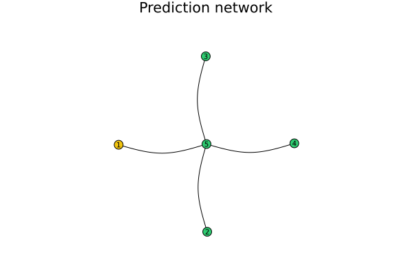

PredNets
Documentation for PredNets.
This package allows to simulate distributed timeseries modelling on graph of predictors.

Currently supported models
- AR
- MA
- ARMA
- ~~Kalman Filter~~Configuration
In ordger to run the simulation a predictor graph must be apriori created.
It is possible to create the graph manually, or using .yaml config file. The structure of the config file is as following:
process:
- vector
- vector
...
- vector
nodes:
- <model description>
edges:
-
- U
- V
...
Each model has its own config definition, but they share mandatory parameters $\sigma$ and $\mu$, which represent the distribution for the external noise when measuring the data.
nodes:
- model: "<model type>"
noise_sigma: 1.4
noise_mu: 0.0
<model specific params>AR needs only weights.
nodes:
- model: "AR"
noise_sigma: 1.4
noise_mu: 0.0
weights:
- B_1
- B_2
...
- B_n
MA needs weigts and c
nodes:
- model: "MA"
noise_sigma: 1.4
noise_mu: 0.0
c: 0
weights:
- B_1
- B_2
...
- B_n
ARMA has ar_params and ma_params which each contains respective params.
nodes:
- model: "ARMA"
noise_mu: 0.0
noise_sigma: 1.4
ar_params: ...
ma_params: ...
Minimal example
using PredNets
g = deserialize("./examples/minimal_example.yaml")
simulate!(g)
save_results(g; output_dir="outputs")List of functionality
PredNets.ARPredNets.ARMAPredNets.GraphPredNets.MAPredNets.ModelPredNets.NodePredNets._observe!PredNets.add_edge!PredNets.create_graph_plotPredNets.deserializePredNets.get_predictionPredNets.link_nodes!PredNets.mix!PredNets.observe!PredNets.observe_and_predict!PredNets.predict!PredNets.save_resultsPredNets.save_resultsPredNets.select_modelPredNets.serializePredNets.serializePredNets.simulate!
PredNets.AR — TypeAutoregressive (AR) model struct.
Fields
deg: integer value representing the degree of the modelweights: vector of Float64 representing the model weightsn: integer value representing the number of data points used in the modeldf: DataFrame with columns:- observed: vector of Float64 representing the observed values
- predicted: vector of Float64 representing the predicted values
- mixed: vector of Float64 representing the mixed values
PredNets.ARMA — TypeAutoregressive moving average (ARMA) model struct.
Fields
ar: AR struct representing the autoregressive part of the modelma: MA struct representing the moving average part of the modeldeg: integer value representing the degree of the modeln: integer value representing the number of data points used in the modeldf: DataFrame with columns:observed: vector of Float64 representing the observed valuespredicted: vector of Float64 representing the predicted valuesmixed: vector of Float64 representing the mixed values
PredNets.Graph — Typemutable struct GraphGraph structure to represent a prediction network.
Attributes
nodes: a dictionary to store node objects.edges: a dictionary to store edges between nodes.process: a vector ofFloat64values representing the input signal to the prediction network.
Examples
julia> g = Graph()
julia> n1 = Node(1, MA, Dict(:c => 1, :weights => [1.4, -0.5]), μ=0.0, σ=0.1)
julia> n2 = Node(2, AR, Dict(:weights => [1.1, -0.2]), μ=0.0, σ=0.1)
julia> add_edge!(g, n1.id, n2.id)
julia> g.nodes[n1.id] = n1
julia> g.nodes[n2.id] = n2
julia> simulate!(g, output_dir="./results")
julia> save_results(g)PredNets.MA — TypeThis struct represents a moving average (MA) model. It stores the model's degree, the weights of the model, a constant c, a noise generator, a vector to store the noise values, the number of observations, and a DataFrame to store observed, predicted and mixed values.
PredNets.Model — TypeModel is an abstract supertype for all models.
PredNets.Node — TypeA Node object is used to represent a node in a graph. Each node has an ID, a noise generator, a model and a dictionary of nodes it is connected to.
Fields:
- id::Int64: unique identifier for the node
- noise_generator::Normal: a Normal distribution used to add noise to observed values
- model::Model: the statistical model used by the node to generate predictions
- nodes::Dict: a dictionary with key-value pairs of the node's connected nodes
PredNets._observe! — Method_observe!(model::M, value::Float64)_observe! is a helper function that is not meant to be called by the user. It takes a Model struct and a Float64 value. It increments the n attribute of the model, and inserts a row with the observed value in the observed column of the DataFrame.
PredNets.add_edge! — Methodadd_edge!(graph::Graph, u::Int, v::Int)Add an edge between the nodes with IDs u and v to the graph.
Arguments
graph: a Graph object to add the edge to.u: the ID of the first node to connect.v: the ID of the second node to connect.
Examples
julia> g = Graph()
julia> add_edge!(g, 1, 2)
julia> add_edge!(g, 2, 3)PredNets.create_graph_plot — MethodGenerates a graph visualization and saves it to a PNG file in the given directory.
Arguments
- graph::Graph: The
Graphobject to visualize. - output_dir::String: The path to the directory where the visualization will be saved. Defaults to the current directory.
PredNets.deserialize — Methoddeserialize(path::String)Deserialize a graph from a YAML file at path.
Arguments
path: the path to the YAML file containing the graph information.
Examples
julia> g = deserialize("graph.yaml")PredNets.get_prediction — Methodget_prediction(model::Model, timestep::Int64)Returns the predicted value at the given timestep.
If the provided timestep is less than the degree of the model, the function returns NaN.
PredNets.link_nodes! — Methodlink_nodes!(left::Node, right::Node)Adds a connection between two nodes.
Arguments:
- left::Node: the first node
- right::Node: the second node
PredNets.mix! — Methodmix!(model::M, timestep::Int64, _values::Dict{Int64,Float64};
mix_func::Function = x::Dict{Int64,Float64} -> mean(values(x)))Computes the prediction of the node and its 1-delta neighbors at the given timestep using the mixing function mix_func and adds it to the mixed column of the df DataFrame.
The dictionary _values contains the values of all of the nodes at the given timestep. If any of these values is NaN, the mixed value should be NaN.
PredNets.observe! — Methodobserve!(model::Model, value::T)Modifies the provided model object by observing the provided value and updating the models, as well as the mixed column of the df DataFrame.
PredNets.observe_and_predict! — Methodobserve_and_predict!(node::Node, timestep::Int64, value::Float64)Adds a new value to a node's model and generates a new prediction for the given timestep
Arguments:
- node::Node: the node to add the value to and generate a prediction for
- timestep::Int64: the timestep to generate a prediction for
- value::Float64: the observed value to add to the model
PredNets.predict! — Methodpredict!(model::Model, timestep::Int64)Predicts the value at the given timestep and adds the result to the predicted column of the df DataFrame. If the provided timestep is less than the degree of the model or greater than the number of observed data points, the prediction should be NaN.
PredNets.save_results — Methodsave_results(graph::Graph; output_dir="path")Saves the results of a graph simulation to a directory.
Arguments:
graph::Graph: TheGraphobject containing the simulation results to save.output_dir::Union{Nothing, String}: The path to the directory where the simulation results will be saved, ornothingto use a temporary directory.
Returns:
nothing.
PredNets.save_results — MethodPlots and saves the prediction results for a given node in a directory.
Args:
- node: the Node whose prediction results should be plotted and saved.
- output_dir: a string representing the directory where the results should be saved.
- kw: additional keyword arguments that are passed to the Plots.jl plotting function.
PredNets.select_model — Methodselect_model(x::String)Returns a Model Type based on the input string.
PredNets.serialize — Methodserialize(graph::Graph, file::String)Serialize a graph to a YAML file at file.
Arguments
graph: the graph to serialize.file: the file path to save the YAML file.
PredNets.serialize — Methodserialize(model::Model)Serializes the model object into a Dict{Symbol, Any}.
PredNets.simulate! — Methodsimulate!(graph::Graph;
process::Union{Nothing, Vector{Float64}}=nothing,
output_dir::Union{String, Nothing}=nothing
)Simulates the process of a graph using the given data, or the graph's own data if none is provided.
Arguments:
- graph::Graph: The
Graphobject to simulate. - process::Union{Nothing, Vector{Float64}}: The data to use for the simulation, or
nothingto use the graph's own data. Defaults tonothing. - output_dir::Union{String, Nothing}: The path to the directory where the simulation results will be saved, or
nothingto use a temporary directory. Defaults tonothing.